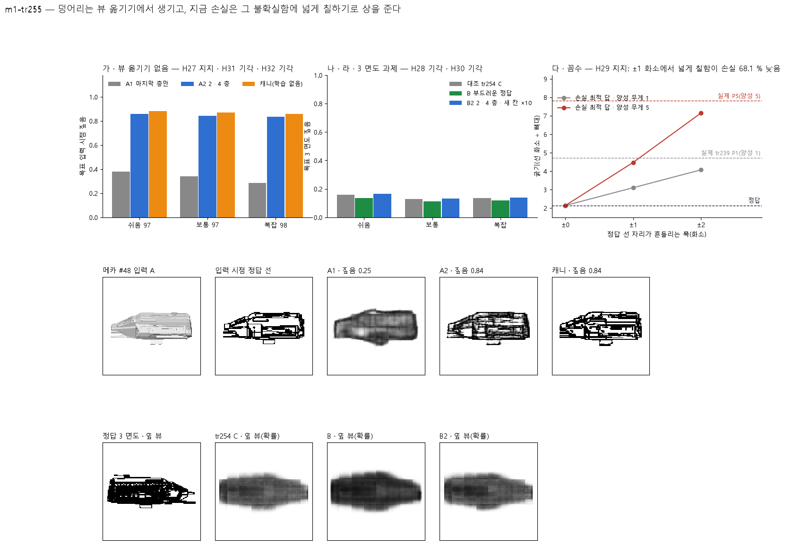

실험 m1_tr0255_h027_가름
목표 G1.1a 한 장 → 3 면도 · G1.1 사진 → 3 면도(중간 표현) · G1 첫 제품 — 피규어 · 메카 사진 여러 장 + 치수 → 숨은선 3 면도 + 파츠별 CAD · G0 임의의 이미지 → CAD 코드 · 빌린 가정 5: 생성기기하 · 흰바탕 · 렌더화풍 · 정사영 · 시점앎 · 갚는 계획: 학습은 생성기 렌더 그대로(데이터 안 건드림) · 판정은 목표 시험지(원화CAD짝 피규어 · 메카 292 렌더) — 흰바탕 · 렌더화풍 · 시점앎은 실물 사진으로 그 뒤 · 정사영은 원근 렌더로 그 뒤 · 목표 시험지 값: 안 잼 (!)
한 장 3 면도 덩어리는 뷰 옮기기 · 가는 선의 적은 학습 신호 · 손실의 넓게 칠하기 이득 · 새 칸 덜 배움 중 어디서 오나?
판정 · H27 지지(뷰를 안 옮기는 과제에서 같은 디코더가 0.85 — 덩어리는 뷰 옮기기에서 생김) · H29 지지(자리를 ±1 화소만 확신 못 해도 지금 손실은 넓게 칠하기에 68 % 낮은 손실을 줌 · ±2 화소 최적 굵기 7.15 ≈ 실제 7.8) · H28 기각(부분 점수는 띠만 넓힘) · H30 기각(새 칸 학습률 × 10 도 3 면도 0.146) · H31 기각(A2 는 복잡해도 0.84) · H32 기각(A2 0.85 는 캐니 0.87 수준 — 입력 시점 선은 렌더에서 쉬운 과제) — 다음: 사용자 결정대로 넓게 칠하기 벌점(m1-tr256) · 뷰 옮기기를 망에 맡기지 않는 길(장마다 추론 → 합치기)을 같이 견줌
| 가설 | 주장 | 결과 | 근거 |
|---|---|---|---|
| H27 | 막힌 곳은 뷰 옮기기다 — 같은 디코더도 뷰를 옮기지 않는 과제에서는 가는 선을 짚는다 | 지지 | 목표 292 · A1 0.335 · A2 0.846 · A2 − A1 +0.51 [0.50, 0.52] · 탐침 시험 반 146 A1 0.345 · A2 0.847(탐침 2 층 0.70 · 0.74 보다 높음) · 3 면도 디코더 tr254 C 0.141 · 생성기 검증 8,000 스텝 A1 0.54 · A2 0.95 |
| H28 | 가는 선이라 학습 신호가 적다 — 정답 둘레에 부분 점수를 주면 선 자리를 더 짚는다 | 기각 | B 0.123 · tr254 C 0.141 · 굵기 생성기 9.41(C 7.38) · 목표 12.14(C 9.48) · 생성기 시험 F 0.767(지킴 통과) · 문턱 0.6 |
| H29 | 지금 손실은 자리를 확신 못 할 때 넓게 칠하기에 상을 준다(꼼수) — 덩어리는 그 상을 받은 답이다 | 지지 | 정답 150 · ±1: 양성 5 이득 68.1 % · 최적 굵기 4.47 / 양성 1 이득 50.7 % · 3.10 · ±2: 양성 5 65.8 % · 7.15 / 양성 1 45.4 % · 4.07 · ±0 최적 굵기 2.14(정답 2.07 · 계산 검사) |
| H30 | tr254 K 는 새 칸이 덜 배운 탓에 진 것이다 — 새 칸 학습률을 10 배로 주면 선 자리를 더 짚는다 | 기각 | B2 0.146 · tr254 C 0.141 · tr254 K 0.143 · 굵기 생성기 7.40 · 목표 10.16 · 생성기 시험 F 0.770 |
| H31 | 구조가 복잡할수록 짚음이 크게 떨어진다 — 좋은 평균은 단순한 모양 몫이다 | 기각 | A2 쉬움 0.857 · 보통 0.844 · 복잡 0.836 · ρ(뼈대 길이) -0.21 · A1 0.381 · 0.339 · 0.285(ρ -0.39) · 캐니 0.880 · 0.870 · 0.857 · 3 면도 tr254 C 0.159 · 0.129 · 0.135 · B2 0.167 · 0.132 · 0.139 |
| H32 | 앞쪽 층을 받은 디코더(A2)는 학습 없는 경계 검출보다 선 자리를 더 잘 짚는다 | 기각 | 캐니(문턱 50 · 150 · 생성기 검증으로 고름) 0.869 · 소벨 0.616 · A2 0.846 · 묶음별 차 -0.023 · -0.026 · -0.021 |
분석
한 줄로
물음: 한 장 3 면도의 덩어리는 뷰 옮기기, 가는 선의 적은 학습 신호, 손실의 넓게 칠하기 이득, 새 칸 덜 배움 중 어디서 오나?
답: 뷰 옮기기와 손실의 꼼수다(H27 · H29 지지). 같은 디코더와 같은 손실이라도, 뷰를 옮기지 않는 과제에서는 선을 가늘게 긋는다(0.85). 선 자리를 ±1 화소만 확신하지 못해도 지금 손실은 넓게 칠한 답에 68 % 낮은 손실을 준다. 부드러운 정답(H28)과 새 칸 학습률(H30)은 3 면도 덩어리를 풀지 못했다. 입력 시점의 높은 점수는 경계 검출(캐니 0.87) 수준이다(H32 기각).
왜 이 실험을 했나
m1-tr254 에서 2 · 4 층 토큰을 디코더에 줘도 3 면도는 덩어리 그대로였다. 사용자는 「가는 선이라 학습할 정보가 적다」 고 봤고, 나는 뷰 옮기기를 의심했다. 둘을 한 판에서 갈랐고, 사용자 결정대로 「넓게 칠하는 꼼수」 가 정말 손실에서 이득인지 계산으로 확인했다. 목표는 사진 한 장 → 3 면도(m1)다.
바꾼 것
갈래마다 하나씩 바꿨다. 출발은 모두 P5 16,000 무게, 8,000 스텝, 씨앗 0 이고 대조는 m1-tr254 의 C 다.
- 가(A1 · A2): 출력을 입력 시점 선 지도로 바꿈(뷰 옮기기 없음). A2 만 2 · 4 층 토큰 + 새 칸 학습률 × 10.
- 나(B): 3 면도 정답 둘레에 부분 점수(1 화소 0.61 · 2 화소 0.14).
- 다(계산): 정답 자리가 ±u 화소 흔들릴 때 지금 손실의 기댓값 — 또렷한 가는 선 대 넓게 칠한 최적 답.
- 라(B2): 3 면도 과제 그대로, 2 · 4 층 + 새 칸 학습률 × 10.
결과

| 가설 | 결과 | 판정선 | 판정 |
|---|---|---|---|
| H27 뷰 옮기기(A2 입력 시점 짚음) | 0.85 [0.84, 0.85] | 0.40 넘게 | 지지 |
| H28 부드러운 정답(B − C · 3 면도) | −0.018 | +0.05 넘게 | 기각 |
| H29 꼼수(±1 화소 · 양성 무게 5) | 넓게 칠함 손실 68 % 낮음 | 10 % 넘게 | 지지 |
| H30 새 칸 학습률(B2 − C) | +0.005 | +0.05 넘게 | 기각 |
| H31 복잡도(A2 복잡 − 쉬움) | −0.02 | −0.15 아래 | 기각 |
| H32 경계 따기 대비(A2 − 캐니) | −0.024 | +0.10 넘게 | 기각 |
짚음은 정답 선 자리의 확률이 둘레보다 얼마나 높은지를 잰다(정답 1.0 · 2 화소 굵힘 0.43 · 다 칠함 0). 복잡도는 정답 3 면도 뼈대 길이로 나눈 세 묶음(97 · 97 · 98)이다.
왜 이렇게 나왔나
확인한 것
- 뷰를 안 옮기면 A2 는 0.85, 마지막 층만 쓰는 A1 은 0.34 다. 3 면도 디코더는 0.14 다. 덩어리는 디코더나 손실의 고정 버릇이 아니다.
- 꼼수 계산의 손실 최적 답 굵기는 ±2 화소 흔들림에서 양성 무게 5 → 7.15, 양성 무게 1 → 4.07 이다. 실제 P5 7.8, tr239 P1 4.7 과 맞는다. 정답 굵기는 2.1 이다.
- 부드러운 정답은 굵기만 키웠다(생성기 7.38 → 9.41). 같은 가는 선으로 A2 는 선을 그었으니, 가는 선의 적은 신호는 덩어리의 원인이 아니다.
- 새 칸 학습률 × 10 은 입력 시점에서는 0.85 를 만들었지만 3 면도에서는 0.146 이다.
- 학습 없는 캐니가 0.87 이다. 흰 바탕 렌더에서 입력 시점 선은 경계 따기로 거의 풀린다(사용자 지적). 복잡 묶음에서도 A2 는 0.84 다.
짐작 (아직 확인 안 함)
- 망은 입력을 보고 다른 뷰의 선 자리를 ±2 화소쯤 확신하지 못하고, 손실은 그 불확실함에 넓게 칠하기로 상을 준다. 벌점으로 넓게 칠하기를 막으면 망이 자리를 더 맞히거나, tr239 처럼 선을 놓칠 수 있다.
한계
- 갈래마다 한 번만 돌렸다. 꼼수 계산은 흔들림을 고른 ±u 로 둔 단순화다.
- 입력 시점 과제의 학습 정답(지도5)과 판정 정답(선규칙)이 조금 다르다(1 화소 F 0.92).
- 모두 흰 바탕 렌더다. 실물 사진에서는 경계 따기부터 다시 재야 한다.
- H31 · H32 는 사용자 요청으로 중간에 더했다(카드 메모). 최종 A 값을 보기 전에 기준을 적었다.
배운 것과 다음
덩어리는 뷰를 옮길 때 생기는 자리 불확실함을 지금 손실이 넓게 칠하기로 보상해서 나온다.
- m1-tr256 — 사용자 결정대로 넓게 칠하기 벌점. tr248(먼 화소 벌점)과 tr239(양성 무게 1)가 「얇아지되 선을 놓침」 이었으니, 벌점과 함께 놓침도 재는 판으로 짠다.
- 같은 판에서 뷰 옮기기를 망에 맡기지 않는 길(입력 시점 선 · 깊이를 먼저 그리고 3 면도는 기하로 — 장마다 추론 → 합치기)을 견준다. 입력 시점 선은 이미 0.85 다.
- 실물 사진에서 입력 시점 선이 경계 따기보다 나은지 다시 잰다(H32 의 렌더 한계).
실험 기록
- 카드 · 가름255.py(흐름 · 꼼수 · 학습 · 시험 · 복잡도 · 경계 · 재기 · 그림) · 잼.json · 꼼수.json · 흐름.png · 결과.png · 원본 out/설명/캐드부품/모델255(A1 · A2 · B · B2 무게 · 목표예측 · 짚음 · 복잡도 · 경계)